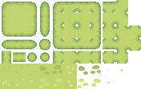
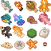

小猫咪休闲垂钓 · 微信小游戏产品原型
小猫咪休闲垂钓是一个零依赖微信小游戏项目。它把原本“直接看到鱼”的玩法，调整成更接近钓鱼节奏的体验：鱼隐藏在水里，玩家观察浮标变化，在咬钩瞬间按住屏幕进入拉扯判定。
这个项目重点展示的是游戏产品的核心循环设计：等待、反馈、反应、拉扯、奖励和惩罚如何组成一局 30 秒的轻量休闲体验。
负责玩法节奏调整、状态机拆解、鱼类数值、反馈机制和微信小游戏实现。
希望快速开始、轻松理解，但每次咬钩和拉扯都有一点紧张感。
完成 Canvas 渲染、触摸输入、倒计时、鱼类概率、结算和最高分保存。
核心体验预览
用真实项目素材重建游戏氛围：岸边角色、水面浮标、隐藏鱼和即时反馈 UI。


30s · 0 fish上钩了！按住拉竿问题定义
直接把鱼显示出来会削弱钓鱼的等待感和惊喜感。
为什么改成观察浮标
休闲钓鱼的乐趣不只是点到目标，而是在等待中观察反馈，并在咬钩瞬间做出反应。鱼隐藏后，玩家的注意力从追逐目标转向浮标状态，节奏更接近真实钓鱼。
因此我把核心反馈集中到浮标：等待阶段轻微漂动，咬钩时剧烈抖动并出现水花，玩家再按住屏幕进入拉扯。
体验断点
- 如果鱼一直可见，玩家会更像在点选目标，而不是钓鱼。
- 如果咬钩没有强反馈，玩家不知道什么时候该操作。
- 如果拉扯没有风险，钓上鱼缺少成就感。
- 如果一局太长，休闲小游戏的碎片时间价值会下降。
目标用户与使用场景
这是一款适合短时间打开、快速理解、反复尝试的小型休闲游戏。
碎片时间
一局 30 秒，适合排队、等车和短暂休息。
轻操作
主要操作是观察浮标和按住屏幕，不需要复杂教程。
小目标
通过分数、稀有鱼和最高分让玩家愿意再来一局。
MVP 范围与取舍
先把一局游戏的核心循环做完整，再考虑养成、图鉴和商业化。
MVP 包含
- 开始、倒计时和结算
- 浮标等待与咬钩反馈
- 按住拉扯进度判定
- 鱼类概率、分数和时间奖惩
- 最高分本地保存
暂不包含
- 金币商城和付费系统
- 复杂鱼竿升级
- 多地图、多天气和任务系统
- 排行榜和社交分享
取舍原因
小游戏最先要验证的是核心循环是否好玩。如果等待、咬钩和拉扯不好玩，再多外围系统也撑不住留存。
核心玩法循环
一局围绕“等待浮标 → 咬钩反应 → 按住拉扯 → 结算反馈 → 下一次等待”循环。
玩家进入 30 秒倒计时，系统安排随机咬钩时间。
鱼隐藏在水里，等待阶段只显示轻微漂动。
浮标剧烈抖动并出现水花，提示玩家操作。
持续按住，让指针尽量保持在安全区域。
钓上鱼加分和奖励时间，失败或塑料袋扣时间。
时间归零后展示本局收获，并保存最高分。
规则与数值拆解
用轻量规则制造可理解的风险和奖励，让小游戏有重复游玩的动力。
基础时间 30 秒，奖励时间最多累计到 60 秒。
错过、失败或钓到塑料袋都会扣 3 秒。
鱼有分值、难度、珍稀度和出现概率。
安全区域宽度和指针节奏影响成功率。
浮标、水花、提示语和结算强化操作结果。
运行方式
这是微信小游戏项目，需要用微信开发者工具运行，而不是普通浏览器页面。
本地运行
- 打开微信开发者工具。
- 选择“小游戏”项目。
- 导入本地目录：/Users/tower/Documents/game01。
- 点击编译运行。
素材说明
项目使用免费游戏素材，仅作为非商业作品集展示。发布或商用前需要替换为自有素材并按要求署名。
项目总结
这个项目展示的是我把轻量玩法拆成状态、反馈、数值和结算闭环的能力。